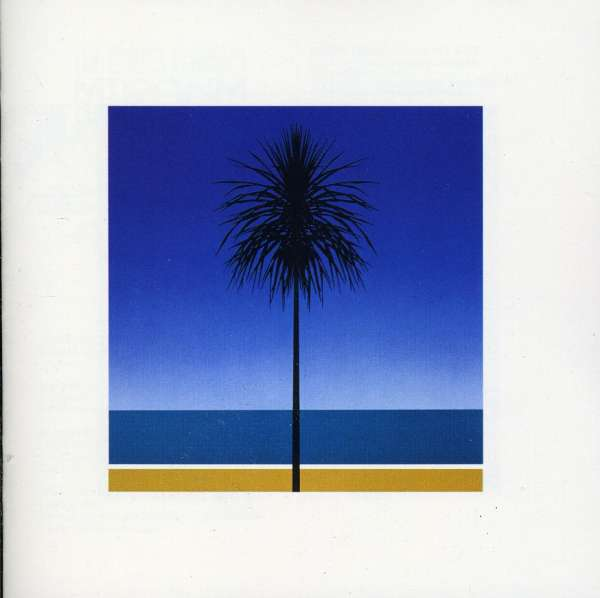
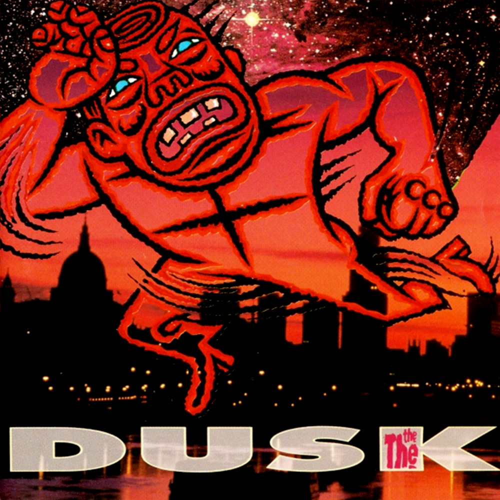
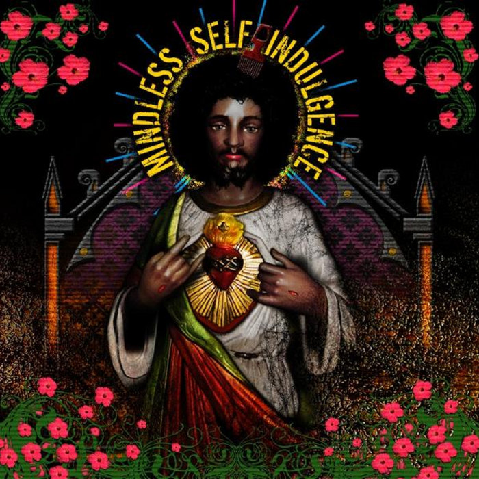

Album Names
- Metronomy - The English Riviera
- The The - Dusk
- The Police - Reggatta De Blanc
- Mindless Self Indulgence - You'll Rebel To Anything
- Daft Punk - Random Access Memories
Image Carousel




The mochi images above are from left to right a gif, jpg, png, and svg.